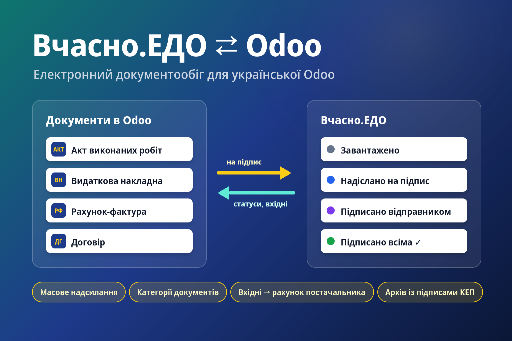

ЕДО: Вчасно
Підключає Odoo до Вчасно.ЕДО через API за токеном із налаштувань Вчасно.
- Завантаження PDF документа з ЄДРПОУ й e-mail отримувача, номером, датою й сумою.
- Варіант «отримувач підписує першим» — документ одразу йде контрагенту.
- Статуси Вчасно, вхідні документи, оригінал і архів з підписами.
Налаштування: ЕДО → Налаштування → Облікові записи → сервіс «Вчасно», токен, «Перевірити з'єднання».